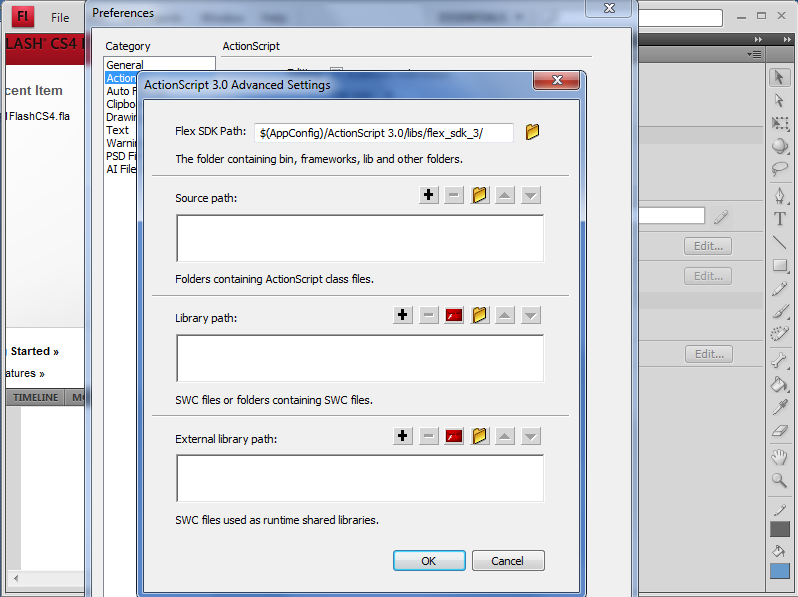
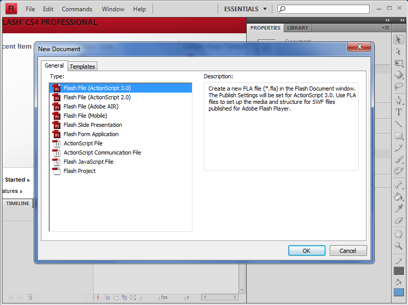
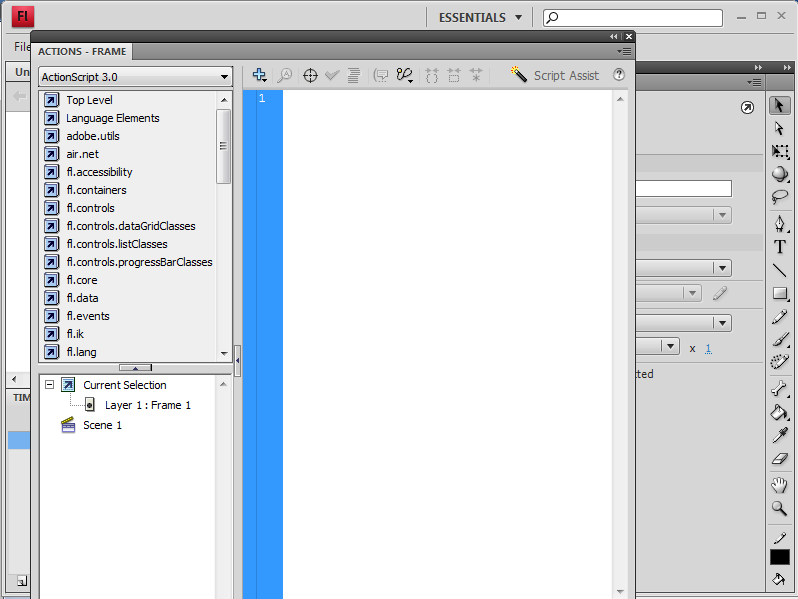

Lesson Requirements
To complete this lesson you will need to download and install a few pieces of software.
- Adobe Flash CS4 - Download
- PushButton Engine - Download - To install just extract to your development folder.
Setting up Adobe Flash CS4
After installing Adobe Flash CS4 you will need to point it to either the PushButton Engine source code or the pre-built PushButton Engine library.
To accomplish this click Edit->Preferences. In the preferences dialog click ActionScript in the catagory list box.

In the ActionScript preferences you should see a language: section at the bottom. Click the ActionScript 3.0 settings button.
Now it's time to ask yourself a question. "Will I be modifying the PushButton Engine source code?"
If you want to edit the source code along with your project then you will need to add the PushButton Engine /src folder
to the source path.
If you do not care about editing the PushButton Engine source code and just want use the engine as is.
You will need to add the PushButton Engine bin folder to the library path.
Creating a new Project
Everything in the PushButton Engine is based on ActionScript 3.0 so you will need to use flash file (ActionScript 3.0). Click File->New and flash file (ActionScript 3.0).
Timeline or Document Class
Before we begin coding you have another decision to make.
"Do I want to use proper object oriented programming with a document class or do I just want to code on the timeline?"
If you want to use proper OOP click document class else click timeline section to move on.
Timeline
To begin coding on the timeline, select the first frame in the timeline by left clicking and select Window->Actions in the menubar.
This brings up the actions script window. Click hello world to move on.
Document Class
We now need to setup a document class for our movie. To do this click File->Publish Settings and select the Flash Tab.
In the script section click the settings button and type Lesson1FlashCS4 in the document class text box.

Now when we run our Flash CS4 movie it will look for a class called Lesson1FlashCS4 in Lesson1FlashCS4.as.
Let's create that file now by clicking File->New, select ActionScript file and click ok. Go ahead and save the file as Lesson1FlashCS4.as.
Hello, World!
That's right, it's time for some code!
Copy and paste the below code into your Lesson1FlashCS4.as file and save it.
package
{
import flash.display.Sprite;
import com.pblabs.engine.PBE;
import com.pblabs.engine.debug.Logger;
public class Lesson1FlashCS4 extends Sprite
{
public function Lesson1FlashCS4():void
{
PBE.startup(this);
Logger.print(this, "Hello, World!");
}
}
}
The above code is basically the minimal application for the PushButton Engine.
When executed it prints the below message in the Adobe Flash CS4 Output Window.
INFO: Lesson1FlashCS4_fla.MainTimeline - Hello, World!
Let's build the project and test it now. Click Control->Test Movie. This will build our application
and if we didn't make any mistakes a window should pop up and you should be greeted with a message in the Adobe Flash CS4 output window.

Review
To summarize the steps of using the PushButton Engine with Adobe Flash CS4.
- Setup your source path or library path.
- Create a new flash file(ActionScript 3.0)
- Setup the document class
- Create an ActionScript file for the document class
Conclusion
Congratulations! You just completed lesson #1, creating a flash file using the PushButton Engine.
This can be used as a base for lesson #2 or any future projects of your own.
You can download the completed project source files for this project below.
Lesson1FlashCS4.zip